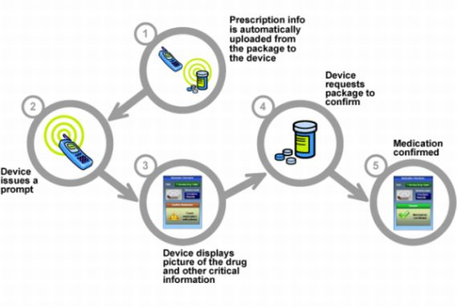

NFC Enables Electronic Door Locks
For doorlocks that are equipped with an actuator and a short range contactless reader, a simple upgrade may allow NFC devices to substitute for contactless cards. Advantages, for example in hospitality, are the possibility to remotely send the access rights in advance to the user's handset, and the coupling with other applications such as booking, and skipping the check-in phase. In the example of access control, one can centrally manage the rights in real time without physical delivery of cards.
NFC and Healthcare

Personal health monitors recording a human’s vital data can be read by an NFC reader/writer, which for example might be a persons mobile phone, by simply touching the reader to the health device. The physical proximity that NFC requires guarantees the operator has the right understanding of which data is read at what time, thus greatly reducing the chance of a human error and, by the simplicity of instructions, allows patients of every age to monitor their health status autonomously.
And once a standardized format and secure storage for medical records and history is available, as well as generally accepted procedures to access these data, NFC will be a natural way to interact between a portable device held by the user and a medical system.
NFC Devices Enable Data Exchange
NFC enables users to quickly and easily transfer information between devices with a simple touch. Whether it be an exchange of business cards, a quick transaction, or downloading a coupon, the proximity ensures that the information shared is the information you want to share.